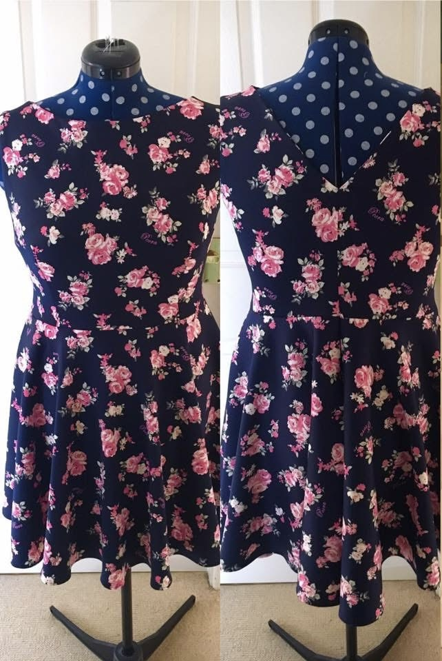
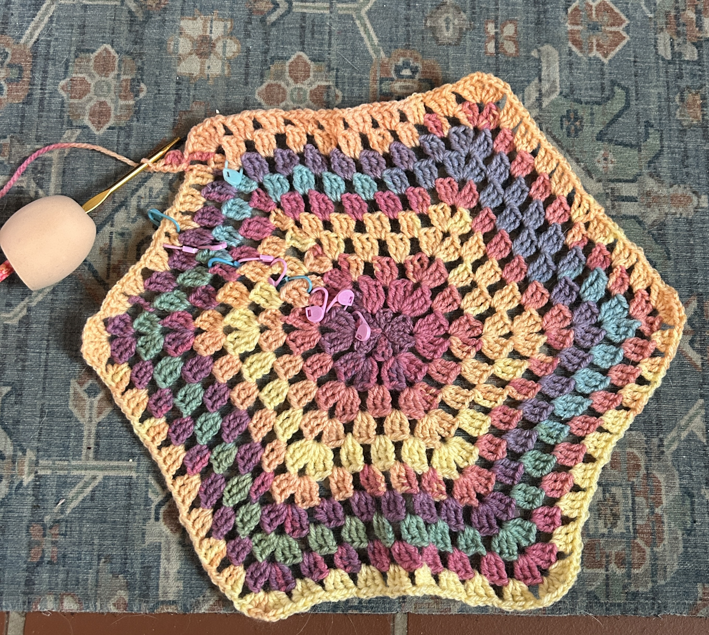

Hi, My name is Heather, I'm a 35yr old data administrator for a tech company with many tattoos. This is a compilation of my pets & a few of my favourite hobbies
My Favourite Movies & TV Series
Movies
Name
Rating
But Why .....
Kpop Demon Hunters
⋆ ⋆ ⋆ ⋆ ⋆
Amazing songs & great parallels with ND struggles
Now You See Me
⋆ ⋆ ⋆ ⋆
Love magic!! Nuff said
King Arthur: Legend of the Sword
⋆ ⋆ ⋆ ⋆
Love a historical movie especially if it had Jude Law ♥
Dune
⋆ ⋆ ⋆ ⋆ ⋆
Awesome music & great story
Wicked
⋆ ⋆ ⋆ ⋆
Very catchy songs, resonates with impact of ADHD/tisim on individuals
TV Series
Name
Rating
But Why .....
Bones
⋆ ⋆ ⋆ ⋆ ⋆
Love a good murder show, and really enjoy the original books but very different from the show
Community
⋆ ⋆ ⋆
Easy to watch, only first 3.5 series are good
Star Trek Voyager
⋆ ⋆ ⋆ ⋆
Go to comfort show, Janeway is the best!!
Darling Buds of May
⋆ ⋆ ⋆ ⋆ ⋆
Feel good series, always make me smile, great cast
Star Trek Strange New Worlds
⋆ ⋆ ⋆ ⋆
Best modern remake, love the character development & back stories
Sewing & Crochet
I have been sewing since covid 2020 after I started watching The Great British Sewing Bee, so the theme tune is now a core memory.
I started crocheting last year. Both these skills were initially taught to me by my amazing mum
Some of my sewing projects:
A tweed blazer
Bikinis
1950s style dress
Dressing gown
Shirts with plackets!

Some of my crochet projects:
Dog blanket
Snood
Ipad/kindle case
A granny hexagon cardigan (progress in photo!)

My pets
I am animal obsessed, so unsurprisingly I have many furbabies:
🐾 Lauda, 12yrs, Siamese Cross, Rescue, Sassy princess, Has one pink toe bean 🐾
🐾 Otis, 11yrs, Chihuahua x JR, Rescue, Gremlin!, Loves the beach 🐾
🐾 Ramesses, 5yrs, DSH, Friendliest boi!, Obsessed with head bumps 🐾